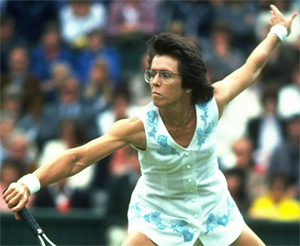
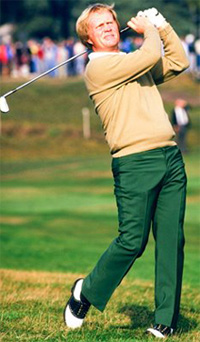
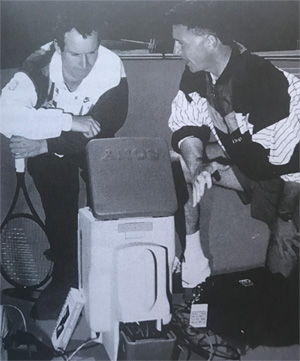

Understanding Mental Imagery:¶
Part 1
Archie Dan Smith, MD
The goal when using mental imagery is to see and feel yourself playing tennis within your own mind, as if you were actually physically playing tennis—seeing yourself as if a real life experience was happening.
This is also called mental rehearsal or visualization. And the research shows that the use of mental imagery in this fashion has a demonstrable, positive impact in helping you hit your shots when you need them.

What did Billie Jean King discover about the power of mental imagery? See below!
Types of Imagery
There are four commonly recognized types of mental imagery. These are visual, kinesthetic, auditory, and olfactory—seeing, feeling, hearing, and smelling. But the two most relevant to tennis are visual and kinesthetic.
Visual imagery means creating pictures in your mind, using your mind's mental camera. This can be done from two perspectives. The first is internal. The second is external. Internal visual imagery means you imagine being inside your own body. You are seeing images as through your own eyes. You see the ball leave the opponents racket and coming toward you. You visualize what you actually see when you play points. This is called first person perspective.
What are the types of mental imagery and how do they apply to tennis?
External visual imagery is viewing yourself from the perspective of an observer, as if you were watching television or video of yourself. This is third person perspective.
Kinesthetic imagery is when you imagine the feeling of playing in your own body. You feel your body is performing the movement. You feel your legs as you run toward the ball. You feel your body and arms as you hit the stroke. You feel the contact with the ball in the sweet spot of the racket.
With kinesthetic imagery you experience the feeling of actual playing a physical point. This can be done solely in terms of imagined feelings, or in conjunction with imagined images.
Which Type?
So is either visual imagery or kinesthetic imagery somehow "better"? This has been reviewed by multiple researchers with conflicting results. My personal take is that the most useful form of imaging is probably dependent on the stage of learning. In early learning external visual perspective seems to be the most beneficial. For later stages, internal imagery is probably better.
Test all the variations of mental imagery in different scenarios.
Kinesthetic imagery in my view is likely most helpful to the skilled athlete—a player who knows what his shots feel like. And kinesthetic imagery is especially powerful when combined with an internal visual perspective.
But I recommend using them all. We are all different, so what works best for one may not work best for another. Different players will naturally gravitate toward one type or the other visual imagery, or toward kinesthetic imagery or some combination of all three.
I say test all variations imagining a variety of different scenarios and game situations. Experiment with mentally practicing your strokes. Experiment with mentally playing points. What works best in one scenario may not necessarily work best in another.
Research
Why is the use of mental imagery so powerful? The research shows that the brain experiences highly vivid imagery as identical or close to identical to actual play. When you imagine yourself performing to perfection, doing precisely what you want when you want to do it, you are actually physiologically creating neural patterns in your brain, just as if you had physically performed the action.
As one researcher put it mental imagery creates "the neural patterns in our brain teach our muscles to do exactly what we want them to do."
But I also think there is something else. Somehow, visualization adds another dynamic.

What did Jack Nicklaus's mental home movies look like?
The duplication of the physical and the mental reinforces and adds to your muscle memory. It adds an element that is separate and apart from your usual physical practice. There are many, many studies that document this and I believe it is a fact. In the first two articles we discussed actual muscle memory practice. (Click Here for Part 1. Click Here for Part 2.) There is a correlation on a neurophysiological level between physical muscle memory practice and the use of imagery.
Program and reprogram your mind and muscles utilizing imagery of your ideal physical practice. This is very powerful in the creation of new neural pathways.
Taken together with your physical practice, the additional imagined neural patterns serve to reinforce and strengthen your game. The brain sees the imagery, your strokes, and the point you are imagining, as a real life situation.
Why Use Imagery?
If you are a club player who wants to improve, to help your tennis team, to get revenge for that last painful loss, or simply to play better and enjoy this great sport more than you already do, then use imagery. There are numerous examples of pro athletes explaining its power in their sports.
Here is hockey legend Wayne Gretzky: "I really believe if you visualize yourself doing something, you can make that image come true. And when it comes true it's like an electric bolt going up your spine."
Here is golfing legend Jack Nicklaus: "I never hit a shot, not even in practice, without having a very sharp in focus picture of it in my head. It's like a color movie. First I see the ball where I want it to finish, nice and white, sitting up high on bright green grass. Then the scene quickly changes and I see the ball going there, its path, trajectory and shape, even its behavior on landing.
The next scene shows me making the kind of swing that will turn the images into reality on landing. These home movies are a key to my concentration"

Working with John Yandell, John McEnroe used visual imagery to recovery the shape of his service motion and 15 mph.
And here basketball legend Michael Jordan: "I visualized where I wanted to be, what kind of player I wanted to become."
Then there is Michael Phelps the most decorated Olympian in history, with 23 Olympic gold medals. The use of imagery was one of the essential components of his success.
His coach, Bob Bowman, would have him visualize a perfect race. According to Bowman, "He's the best I've ever seen--and he may be the best ever in terms visualization."
Tennis
As John Yandell has explained in a seminal Tennisplayer article, he helped John McEnroe use imagery to recreate the shape of his service motion in 1991, using film of himself from 1984 when he had the best serve in the world. This result was that John recovered 15mph or more that he had lost in ball speed and his serving percentages went back up to the mid 60s, having been stuck in the 40s. (Click Here.)
In an interview Billie Jean King did with John, she explained that she discovered that she was spontaneously visualizing shots in matches and that she then created a series of visual sequences for every aspect of her game and used them actively for the rest of her career.
These are just two examples from legendary players. The fact is that whatever your level, imagery can help every aspect of your game, your strokes, your motivation, your confidence, your tactics, and your performance outcomes. More on how to do that in the next article.

Archie Dan Smith, MD is a retired physician living in Austin, Texas. Here is how he describes his tennis journey, leading to the creation of his work on muscle memory:
"I played for 2 years at my small town high school. For the next 10 years I played a dozen times a year with friends. Then I did not play for decades. About 10 years ago I began to play again. I was a mid-level 3.5 player but I could tell over time my game was slipping.
During this period I came up with and started implementing my theories on muscle memory. I started getting better. Two years ago I won the 3.5 men’s singles division in the long running main City of Austin tournament. I beat a 26 year old in the finals. Now I am recruited by USTA teams that have won regionals, and I play #1 doubles for a team in the Austin Tennis League. I conclude that there may be something to my theory."